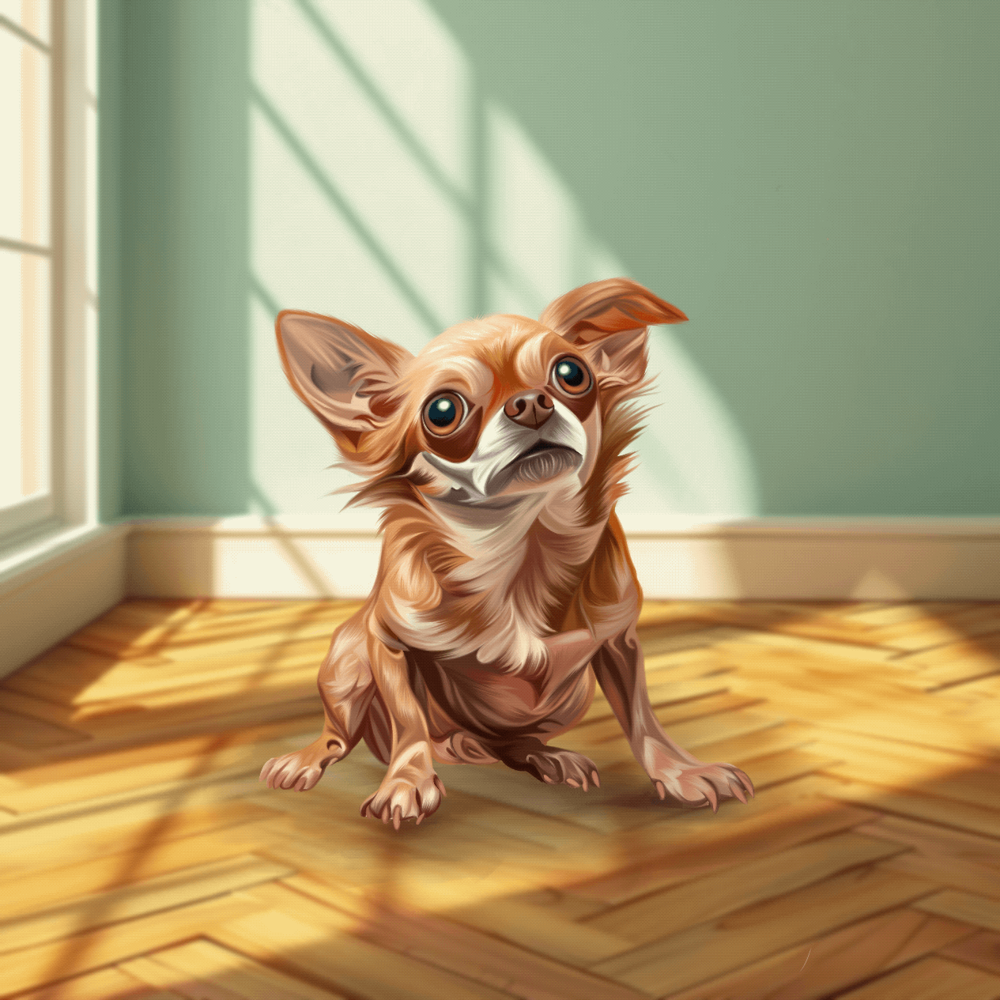

Vücut Dili:
Korkmuş bir köpeğin vücut dili genellikle gerilmiş ve toplanmış bir şekilde olabilir. Vücut genellikle biraz geriye çekilmiş veya sıkışmış bir pozisyonda olabilir.
Kuyruk Durumu:
Kuyruğu vücuda yakın bir şekilde sarılmış veya aşağı doğru kıvrılmış olabilir. Kuyruk hareketleri daha az olabilir veya yok denecek kadar az olabilir.
Kulaklar:
Korkmuş bir köpeğin kulakları genellikle aşağı doğru veya geriye yatmış olabilir. Kulaklar genellikle sıkıca başın yanlarına yapışık veya gerilmiş bir şekilde tutulur.
Gözler:
Küçülmüş veya daralmış olabilir. Göz teması kaçınabilir veya korkuyla dolu bir ifadeye sahip olabilir.
Ağız:
Korkmuş bir köpeğin ağzı genellikle kapalı olabilir veya hafifçe açık olabilir. Dil dışarı çıkabilir ve ağız kenarları aşağı doğru kıvrılmış olabilir.
Solunum:
Solunumu genellikle hızlanmış olabilir. Nefes alış verişi hızlı ve yüzeysel olabilir.
Genel Davranış:
Korkmuş bir köpek genellikle çevresini dikkatle gözler ve kaçınma davranışları sergileyebilir. Geri çekilebilir veya sakinleşmek için bir sığınak arayabilir.